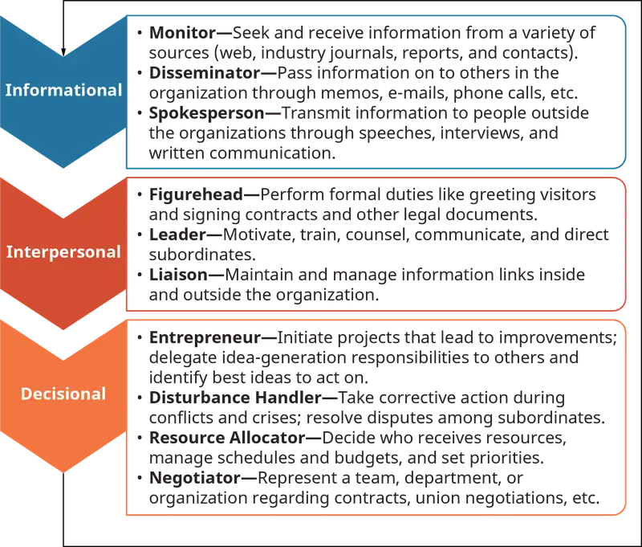
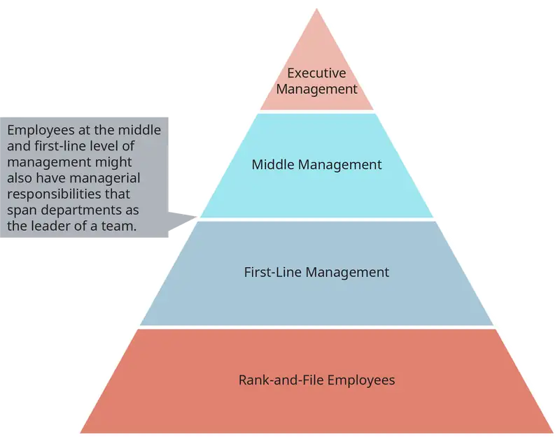
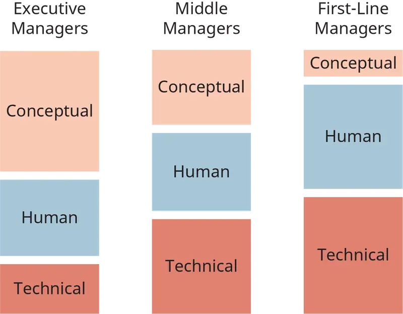

Chapter 1: Managing and Performing¶
Introduction¶
Learning Outcomes
After reading this chapter, you should be able to answer these questions:
- What do managers do to help organizations achieve top performance?
- What are the roles that managers play in organizations?
- What are the characteristics that effective managers display?
Exploring Managerial Careers: You
So, you’re in this course and you may have pondered, or discussed with others, what this course will be about. You probably have some preconceptions of what management is all about. You must manage your time, deciding on how much study time you will devote to your management and accounting classes, for instance. You may have had a summer or part-time job where you had a manager whom you had to report to. You may have followed news reports on successful managers like Jeff Bezos of Amazon or Sheryl Sandberg of Facebook and want to learn what made them successful so you can emulate their practices in your business career. You may have the impression (not an accurate one) that management is basically just common sense and that you really don’t need to take this course except that you must meet your degree requirement.
You may be an accounting or marketing major who is taking this class because it is required for completion of your degree requirements, but you don’t think that you will ever require what you learn in this class during your career since you don’t plan on applying for HR jobs upon graduation. If you’re believing this, you could not be more mistaken. Regardless of where you are in your career, be it as an individual contributor, project leader, or middle or senior manager, what you will get out of this course will be valuable. If your first job out of college is as an accountant, sales representative, or another entry-level position, you will appreciate the roles that your managers, both direct and senior level, play in an organization and the behaviors and actions that will get you recognized and appreciated. Best of luck!
Most management textbooks would say, as does this one, that managers spend their time engaged in planning, organizing, staffing, directing, coordinating, reporting, and controlling. These activities, as Hannaway found in her study of managers at work, “do not, in fact, describe what managers do.” At best they seem to describe vague objectives that managers are continually trying to accomplish. The real world, however, is far from being that simple. The world in which most managers work is a “messy and hectic stream of ongoing activity.”
1.1 What Do Managers Do?¶
- What do managers do to help organizations achieve top performance?
Managers are in constant action. Virtually every study of managers in action has found that they “switch frequently from task to task, changing their focus of attention to respond to issues as they arise, and engaging in a large volume of tasks of short duration.” Mintzberg observed CEOs on the job to get some idea of what they do and how they spend their time. He found, for instance, that they averaged 36 written and 16 verbal contacts per day, almost every one of them dealing with a distinct or different issue. Most of these activities were brief, lasting less than nine minutes.
Kotter studied a number of successful general managers over a five-year period and found that they spend most of their time with others, including subordinates, their bosses, and numerous people from outside the organization. Kotter’s study found that the average manager spent just 25% of his time working alone, and that time was spent largely at home, on airplanes, or commuting. Few of them spent less than 70% of their time with others, and some spent up to 90% of their working time this way.
Kotter also found that the breadth of topics in their discussions with others was extremely wide, with unimportant issues taking time alongside important business matters. His study revealed that managers rarely make “big decisions” during these conversations and rarely give orders in a traditional sense. They often react to others’ initiatives and spend substantial amounts of time in unplanned activities that aren’t on their calendars. He found that managers will spend most of their time with others in short, disjointed conversations. “Discussions of a single question or issue rarely last more than ten minutes,” he notes. “It is not at all unusual for a general manager to cover ten unrelated topics in a five-minute conversation.” More recently, managers studied by Sproull showed similar patterns. During the course of a day, they engaged in 58 different activities with an average duration of just nine minutes.
Interruptions also appear to be a natural part of the job. Stewart found that the managers she studied could work uninterrupted for half an hour only nine times during the four weeks she studied them. Managers, in fact, spend very little time by themselves. Contrary to the image offered by management textbooks, they are rarely alone drawing up plans or worrying about important decisions. Instead, they spend most of their time interacting with others—both inside and outside the organization. If casual interactions in hallways, phone conversations, one-on-one meetings, and larger group meetings are included, managers spend about two-thirds of their time with other people. As Mintzberg has pointed out, “Unlike other workers, the manager does not leave the telephone or the meeting to get back to work. Rather, these contacts are his work.”
The interactive nature of management means that most management work is conversational. When managers are in action, they are talking and listening. Studies on the nature of managerial work indicate that managers spend about two-thirds to three-quarters of their time in verbal activity. These verbal conversations, according to Eccles and Nohria, are the means by which managers gather information, stay on top of things, identify problems, negotiate shared meanings, develop plans, put things in motion, give orders, assert authority, develop relationships, and spread gossip. In short, they are what the manager’s daily practice is all about. “Through other forms of talk, such as speeches and presentations,” they write, “managers establish definitions and meanings for their own actions and give others a sense of what the organization is about, where it is at, and what it is up to.”
Concept Check
What do managers do to help organizations achieve top performance?
1.2 The Roles Managers Play¶
- What are the roles that managers play in organizations?
In Mintzberg’s seminal study of managers and their jobs, he found the majority of them clustered around three core management roles.
Interpersonal roles. Managers are required to interact with a substantial number of people in the course of a workweek. They host receptions; take clients and customers to dinner; meet with business prospects and partners; conduct hiring and performance interviews; and form alliances, friendships, and personal relationships with many others. Numerous studies have shown that such relationships are the richest source of information for managers because of their immediate and personal nature.
Three of a manager’s roles arise directly from formal authority and involve basic interpersonal relationships. First is the figurehead role. As the head of an organizational unit, every manager must perform some ceremonial duties. In Mintzberg’s study, chief executives spent 12% of their contact time on ceremonial duties; 17% of their incoming mail dealt with acknowledgments and requests related to their status. One example is a company president who requested free merchandise for a handicapped schoolchild.
Managers are also responsible for the work of the people in their unit, and their actions in this regard are directly related to their role as a leader. The influence of managers is most clearly seen, according to Mintzberg, in the leader role. Formal authority vests them with great potential power. Leadership determines, in large part, how much power they will realize.
Does the leader’s role matter? Ask the employees of Chrysler Corporation (now DaimlerChrysler). When Lee Iacocca took over the company in the 1980s, the once-great auto manufacturer was in bankruptcy, teetering on the verge of extinction. He formed new relationships with the United Auto Workers, reorganized the senior management of the company, and—perhaps most importantly—convinced the U.S. federal government to guarantee a series of bank loans that would make the company solvent again. The loan guarantees, the union response, and the reaction of the marketplace were due in large measure to Iacocca’s leadership style and personal charisma. More recent examples include the return of Starbucks founder Howard Schultz to re-energize and steer his company, and Amazon CEO Jeff Bezos and his ability to innovate during a downturn in the economy.
Popular management literature has had little to say about the liaison role until recently. This role, in which managers establish and maintain contacts outside the vertical chain of command, becomes especially important in view of the finding of virtually every study of managerial work that managers spend as much time with peers and other people outside of their units as they do with their own subordinates. Surprisingly, they spend little time with their own superiors. In Rosemary Stewart’s study, 160 British middle and top managers spent 47% of their time with peers, 41% of their time with people inside their unit, and only 12% of their time with superiors. Guest’s (1956) study of U.S. manufacturing supervisors revealed similar findings.
Informational roles. Managers are required to gather, collate, analyze, store, and disseminate many kinds of information. In doing so, they become information resource centers, often storing huge amounts of information in their own heads, moving quickly from the role of gatherer to the role of disseminator in minutes. Although many business organizations install large, expensive management information systems to perform many of those functions, nothing can match the speed and intuitive power of a well-trained manager’s brain for information processing. Not surprisingly, most managers prefer it that way.
As monitors, managers are constantly scanning the environment for information, talking with liaison contacts and subordinates, and receiving unsolicited information, much of it as a result of their network of personal contacts. A good portion of this information arrives in verbal form, often as gossip, hearsay, and speculation.
In the disseminator role, managers pass privileged information directly to subordinates, who might otherwise have no access to it. Managers must not only decide who should receive such information, but how much of it, how often, and in what form. Increasingly, managers are being asked to decide whether subordinates, peers, customers, business partners, and others should have direct access to information 24 hours a day without having to contact the manager directly.
In the spokesperson role, managers send information to people outside of their organizations: an executive makes a speech to lobby for an organizational cause, or a supervisor suggests a product modification to a supplier. Increasingly, managers are also being asked to deal with representatives of the news media, providing both factual and opinion-based responses that will be printed or broadcast to vast unseen audiences, often directly or with little editing. The risks in such circumstances are enormous, but so too are the potential rewards in terms of brand recognition, public image, and organizational visibility.
Decisional roles. Ultimately, managers are charged with the responsibility of making decisions on behalf of both the organization and the stakeholders with an interest in it. Such decisions are often made under circumstances of high ambiguity and with inadequate information. Often, the other two managerial roles—interpersonal and informational—will assist a manager in making difficult decisions in which outcomes are not clear and interests are often conflicting.
In the role of entrepreneur, managers seek to improve their businesses, adapt to changing market conditions, and react to opportunities as they present themselves. Managers who take a longer-term view of their responsibilities are among the first to realize that they will need to reinvent themselves, their product and service lines, their marketing strategies, and their ways of doing business as older methods become obsolete and competitors gain advantage.
While the entrepreneur role describes managers who initiate change, the disturbance or crisis handler role depicts managers who must involuntarily react to conditions. Crises can arise because bad managers let circumstances deteriorate or spin out of control, but just as often good managers find themselves in the midst of a crisis that they could not have anticipated but must react to just the same.
The third decisional role of resource allocator involves managers making decisions about who gets what, how much, when, and why. Resources, including funding, equipment, human labor, office or production space, and even the boss’s time are all limited, and demand inevitably outstrips supply. Managers must make sensible decisions about such matters while still retaining, motivating, and developing the best of their employees.
The final decisional role is that of negotiator. Managers spend considerable amounts of time in negotiations: over budget allocations, labor and collective bargaining agreements, and other formal dispute resolutions. In the course of a week, managers will often make dozens of decisions that are the result of brief but important negotiations between and among employees, customers and clients, suppliers, and others with whom managers must deal. A visual interpretation of the roles managers play is illustrated in Figure 1.4.

Concept Check
Describe and explain how Mintzberg defines the manager’s job.
1.3 Major Characteristics of the Manager's Job¶
- What are the characteristics that effective managers display?
Time is fragmented. Managers have acknowledged from antiquity that they never seem to have enough time to get all those things done that need to be done. In the latter years of the twentieth century, however, a new phenomenon arose: demand for time from those in leadership roles increased, while the number of hours in a day remained constant. Increased work hours was one reaction to such demand, but managers quickly discovered that the day had just 24 hours and that working more of them produced diminishing marginal returns. According to one researcher, “Managers are overburdened with obligations yet cannot easily delegate their tasks. As a result, they are driven to overwork and forced to do many tasks superficially. Brevity, fragmentation, and verbal communication characterize their work.”
Values compete and the various roles are in tension. Managers clearly cannot satisfy everyone. Employees want more time to do their jobs; customers want products and services delivered quickly and at high quality levels. Supervisors want more money to spend on equipment, training, and product development; shareholders want returns on investment maximized. A manager caught in the middle cannot deliver to each of these people what each most wants; decisions are often based on the urgency of the need and the proximity of the problem.
The job is overloaded. In recent years, many North American and global businesses were reorganized to make them more efficient, nimble, and competitive. For the most part, this reorganization meant decentralizing many processes along with the wholesale elimination of middle management layers. Many managers who survived such downsizing found that their number of direct reports had doubled. Classical management theory suggests that seven is the maximum number of direct reports a manager can reasonably handle. Today, high-speed information technology and remarkably efficient telecommunication systems mean that many managers have as many as 20 or 30 people reporting to them directly.
Efficiency is a core skill. With less time than they need, with time fragmented into increasingly smaller units during the workday, with the workplace following many managers out the door and even on vacation, and with many more responsibilities loaded onto managers in downsized, flatter organizations, efficiency has become the core management skill of the twenty-first century.
What Varies in a Manager’s Job? The Emphasis¶
The entrepreneur role is gaining importance. Managers must increasingly be aware of threats and opportunities in their environment. Threats include technological breakthroughs on the part of competitors, obsolescence in a manager’s organization, and dramatically shortened product cycles. Opportunities might include product or service niches that are underserved, out-of-cycle hiring opportunities, mergers, purchases, or upgrades in equipment, space, or other assets. Managers who are carefully attuned to the marketplace and competitive environment will look for opportunities to gain an advantage.
So is the leader role gaining importance. Managers must be more sophisticated as strategists and mentors. A manager’s job involves much more than simple caretaking in a division of a large organization. Unless organizations are able to attract, train, motivate, retain, and promote good people, they cannot possibly hope to gain advantage over the competition. Thus, as leaders, managers must constantly act as mentors to those in the organization with promise and potential. When organizations lose a highly capable worker, all else in their world will come to a halt until they can replace that worker. Even if they find someone ideally suited and superbly qualified for a vacant position, they must still train, motivate, and inspire that new recruit, and live with the knowledge that productivity levels will be lower for a while than they were with their previous employee.
Managerial Responsibilities¶
An important question often raised about managers is: What responsibilities do managers have in organizations? According to our definition, managers are involved in planning, organizing, directing, and controlling. Managers have described their responsibilities that can be aggregated into nine major types of activity. These include:
- Long-range planning. Managers occupying executive positions are frequently involved in strategic planning and development.
- Controlling. Managers evaluate and take corrective action concerning the allocation and use of human, financial, and material resources.
- Environmental scanning. Managers must continually watch for changes in the business environment and monitor business indicators such as returns on equity or investment, economic indicators, business cycles, and so forth.
- Supervision. Managers continually oversee the work of their subordinates.
- Coordinating. Managers often must coordinate the work of others both inside the work unit and out.
- Customer relations and marketing. Certain managers are involved in direct contact with customers and potential customers.
- Community relations. Contact must be maintained and nurtured with representatives from various constituencies outside the company, including state and federal agencies, local civic groups, and suppliers.
- Internal consulting. Some managers make use of their technical expertise to solve internal problems, acting as inside consultants for organizational change and development.
- Monitoring products and services. Managers get involved in planning, scheduling, and monitoring the design, development, production, and delivery of the organization’s products and services.
As we shall see, not every manager engages in all of these activities. Rather, different managers serve different roles and carry different responsibilities, depending upon where they are in the organizational hierarchy. We will begin by looking at several of the variations in managerial work.
Variations in Managerial Work¶
Although each manager may have a diverse set of responsibilities, including those mentioned above, the amount of time spent on each activity and the importance of that activity will vary considerably. The two most salient perceptions of a manager are (1) the manager’s level in the organizational hierarchy and (2) the type of department or function for which he is responsible. Let us briefly consider each of these.
Management by Level. We can distinguish three general levels of management: executives, middle management, and first-line management (see Figure 1.5). Executive managers are at the top of the hierarchy and are responsible for the entire organization, especially its strategic direction. Middle managers, who are at the middle of the hierarchy, are responsible for major departments and may supervise other lower-level managers. Finally, first-line managers supervise rank-and-file employees and carry out day-to-day activities within departments.

Figure 1.6 shows differences in managerial activities by hierarchical level. Senior executives will devote more of their time to conceptual issues, while front-line managers will concentrate their efforts on technical issues. For example, top managers rate high on such activities as long-range planning, monitoring business indicators, coordinating, and internal consulting. Lower-level managers, by contrast, rate high on supervising because their responsibility is to accomplish tasks through rank-and-file employees. Middle managers rate near the middle for all activities. We can distinguish three types of managerial skills:
- Technical skills. Managers must have the ability to use the tools, procedures, and techniques of their special areas. An accountant must have expertise in accounting principles, whereas a production manager must know operations management. These skills are the mechanics of the job.
- Human relations skills. Human relations skills involve the ability to work with people and understand employee motivation and group processes. These skills allow the manager to become involved with and lead his group.
- Conceptual skills. These skills represent a manager’s ability to organize and analyze information in order to improve organizational performance. They include the ability to see the organization as a whole and to understand how various parts fit together to work as an integrated unit. These skills are required to coordinate the departments and divisions successfully so that the entire organization can pull together.
As shown in Figure 1.6, different levels of these skills are required at different stages of the managerial hierarchy. That is, success in executive positions requires far more conceptual skill and less use of technical skills in most (but not all) situations, whereas first-line managers generally require more technical skills and fewer conceptual skills. Note, however, that human relations skills, or people skills, remain important for success at all three levels in the hierarchy.

Management by Department or Function. In addition to level in the hierarchy, managerial responsibilities also differ with respect to the type of department or function. There are differences found for quality assurance, manufacturing, marketing, accounting and finance, and human resource management departments. For instance, manufacturing department managers will concentrate their efforts on products and services, controlling, and supervising. Marketing managers, in comparison, focus less on planning, coordinating, and consulting and more on customer relations and external contact. Managers in both accounting and human resource management departments rate high on long-range planning, but will spend less time on the organization’s products and service offerings. Managers in accounting and finance are also concerned with controlling and with monitoring performance indicators, while human resource managers provide consulting expertise, coordination, and external contacts. The emphasis on and intensity of managerial activities varies considerably by the department the manager is assigned to.
At a personal level, knowing that the mix of conceptual, human, and technical skills changes over time and that different functional areas require different levels of specific management activities can serve at least two important functions. First, if you choose to become a manager, knowing that the mix of skills changes over time can help you avoid a common complaint that often young employees want to think and act like a CEO before they have mastered being a first-line supervisor. Second, knowing the different mix of management activities by functional area can facilitate your selection of an area or areas that best match your skills and interests.
In many firms managers are rotated through departments as they move up in the hierarchy. In this way they obtain a well-rounded perspective on the responsibilities of the various departments. In their day-to-day tasks they must emphasize the right activities for their departments and their managerial levels. Knowing what types of activity to emphasize is the core of the manager’s job. In any event, we shall return to this issue when we address the nature of individual differences in the next chapter.
Concept Check
Describe and explain the different levels of management.
Describe and explain the three types of managerial skills and how they relate to each level of management.
Chapter Review¶
Key Terms¶
- Decisional role
- One of the three major roles that a manager assumes in the organization.
- executive managers
- Generally, a team of individuals at the highest level of management of an organization.
- first-line management
- The level of management directly managing nonmanagerial employees.
- Informational role
- One of the three major roles that a manager assumes in the organization.
- Interpersonal role
- One of the three major roles that a manager assumes in the organization.
- middle management
- The managers in an organization at a level just below that of senior executives.
Summary¶
1.1 What Do Managers Do?¶
- What do managers do to help organizations achieve top performance?
In order to help their organizations to achieve top performance, managers must adapt their roles and actions to unique and changing circumstances. Their most common activities involve spending time with others in brief, unplanned, verbal conversations. As a result, managers must have strong listening and speaking skills, and must be able to record and act on fragmented information.
1.2 The Roles Managers Play¶
- What are the roles that managers play in organizations?
Managers perform a variety of roles in organizations, but amongst one of the most important functions they perform is communicating with direct reports to help their organizations achieve and exceed goals. Managers perform three major types of roles within organizations, interpersonal roles, informational roles, and decisional roles. the extent of each of these roles depends on the manager’s position within the organizational hierarchy.
1.3 Major Characteristics of the Manager's Job¶
- What are the characteristics that effective managers display?
Management is the process of planning, organizing, directing, and controlling the activities of employees in combination with other resources to accomplish organizational goals. Managerial responsibilities include long-range planning, controlling, environmental scanning, supervision, coordination, customer relations, community relations, internal consulting, and monitoring of products and services. These responsibilities differ by level in the organizational hierarchy and by department or function. The twenty-first-century manager will differ from most current managers in four ways. In essence, he will be a global strategist, a master of technology, a good politician, and a premier leader-motivator.
Chapter Review Questions¶
- What are the characteristics and traits that you possess that are common to all successful managers?
- Why should management be considered an occupation rather than a profession?
- How do managers learn how to perform the job?
- Explain the manager’s job according to Henry Mintzberg.
- What responsibilities do managers have towards people within the organization? How do they express these responsibilities?
- How do managers perform their job according to John Kotter?
- How do managers make rational decisions?
- How does the nature of management change according to one’s level and function in the organization?
- Discuss the role of management in the larger societal context. What do you think the managers of the future will be like?
- Identify what you think are the critical issues facing contemporary management. Explain.
Management Skills Application Exercises¶
- During this and your other courses, there will likely be products of your and team-based assignments that can illustrate specific competencies such as the ability to prepare a spreadsheet application, write programming code, or show your communication abilities that demonstrate your skills in a video. It is a good practice to catalog and save these artifacts in a portfolio that will be a useful in demonstrating your skills in future job interviews.
- Time management is an important skill that will impact your future as a manager. You can categorize the time that you spend as either required or discretionary. You can assess your time management skills by keeping track of your time using a schedule calendar and breaking down the time devoted to each activity over a week. After a week of logging the activity, note whether each activity was required or discretionary and whether the time was used productively or unproductively using a 10-point scale in which 10 is very productive and 1 is completely unproductive. Now write up a plan on how to manage your time by coming up with a list of what to start doing and stop doing and what you can do to manage your discretionary time more productively.
Managerial Decision Exercises¶
-
You are a manager at a local convenience store that has been the victim of graffiti. Identify the roles you will undertake with both internal employees and others.
-
Here are three job titles. Rank which job would devote the most of its time to conceptual, human, and technical skills.
a. Vice president of finance at a Fortune 100 company
b. Coding for a video game producer
c. General manager at a local McDonald’s franchise
Critical Thinking Case¶
New Management Challenges for the New Age¶
Today’s news is littered with scandals, new allegations of sexual assault, and tragedy. Since 2017 and the #metoo Movement, stemming from the Harvey Weinstein scandal, more and more public figures have been put into the spotlight to defend themselves against allegations from women around the globe.
Not only publically, but privately in companies around the world, there have been firings, and investigations into misconduct from co-workers, managers, and CEOs. It is a relevant topic that is getting long overdue publicity and encouraging more men and women to come forward to discuss openly rather than hide the events and injustices of the past. Other events showcase the tumultuous and on-edge society we are living in, such as the Charlottesville, VA attack, that left 1 dead and 19 injured when a person drove a car through a crowd of protestors during a White nationalist gathering.
With events on a daily business, it is important for companies to take a stand against racial hatred, harassment of any kind, and have firm policies when such events occur. Take Netflix for example, who in July of 2018 fired chief communications officer for saying the “N-word” in full form. This event occurred during an internal meeting, not directing the slur at anyone specific, but claimed it was being made as an emphatic point about offensive words in comedy programming. The “Netflix way”, the culture that is built around radical candor and transparency was put to the test during this occurrence.
The offender, Jonathan Friedland attempted to apologize for his misdeed, hoping it would fade away and his apology would be accepted. However, it didn’t work that way, instead the anger was palpable between co-workers, and eventually led to the firing of Friedland after a few months of inaction.
Netflixers are given a high level of freedom and responsibility within their “Netflix way” culture. Blunt feedback is encouraged, trust and discretion is the ultimate gate keeper, as employees have access to sensitive information, and are ultimately trusted for how they expense items and take vacation time.
Between the insanely fast-paced streaming services industry, it is hard to keep this culture at a premium, but it is imperative for the success of the company overall. “As you scale a company to become bigger and bigger how do you scale that kind of culture?” said Colin Estep, a former senior engineer who left voluntarily in 2016. “I don’t know that we ever had a good answer.”
In order to keep up, sometimes the company is seen as harsh in their tactics to keep the best of the best. “I think we’re transparent to a fault in our culture and that can come across as cutthroat,” said Walta Nemariam, an employee in talent acquisition at Netflix, in the video.
Netflix has stayed true to their cultural values despite the pressures and sometimes negative connotations associated with this “cutthroat” environment. Their ability to remain agile, while displaying no tolerances for societal injustices makes them at the forefront of new age companies. It is a difficult pace to stay in line with, but it seems that they are keeping in stride and remaining true to who they are, for now.
Critical Thinking Questions:
- How have the current cultural environment of our country shaped the way that companies are looking at their own corporate cultural standards?
- What are the potential downfalls and positive influences of the “Netflix way”?
- How does Netflix’s internal culture negatively or positively affect their ability to stay competitive and deliver cutting edge content?
Sources: B. Stelter, "The Weinstein Effect: Harvey Weinstein scandal sparks movements in Hollywood and beyond," CNN Business, October 20, 2017, https://money.cnn.com/2017/10/20/media/weinstein-effect-harvey-weinstein/; https://www.washingtonpost.com/; L. Hertzler, " Talking #MeToo, one year after bombshell Weinstein allegations," Penn Today, October 30, 2018, https://penntoday.upenn.edu/news/talking-me-too-one-year-later; S. Ramachandran and J. Flint, " At Netflix, Radical Transparency and Blunt Firings Unsettle the Ranks," Wall Street Journal, October 25, 2018, https://www.wsj.com/articles/at-netflix-radical-transparency-and-blunt-firings-unsettle-the-ranks-1540497174
Adapted from Principles of Management by OpenStax, licensed under CC BY 4.0. Access the original for free at openstax.org. Changes: converted to the web reading format of The Open Book Project.